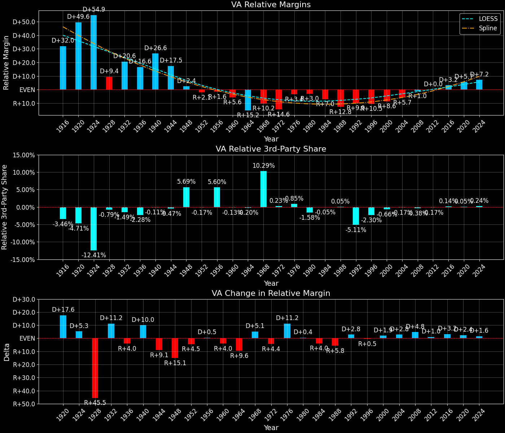
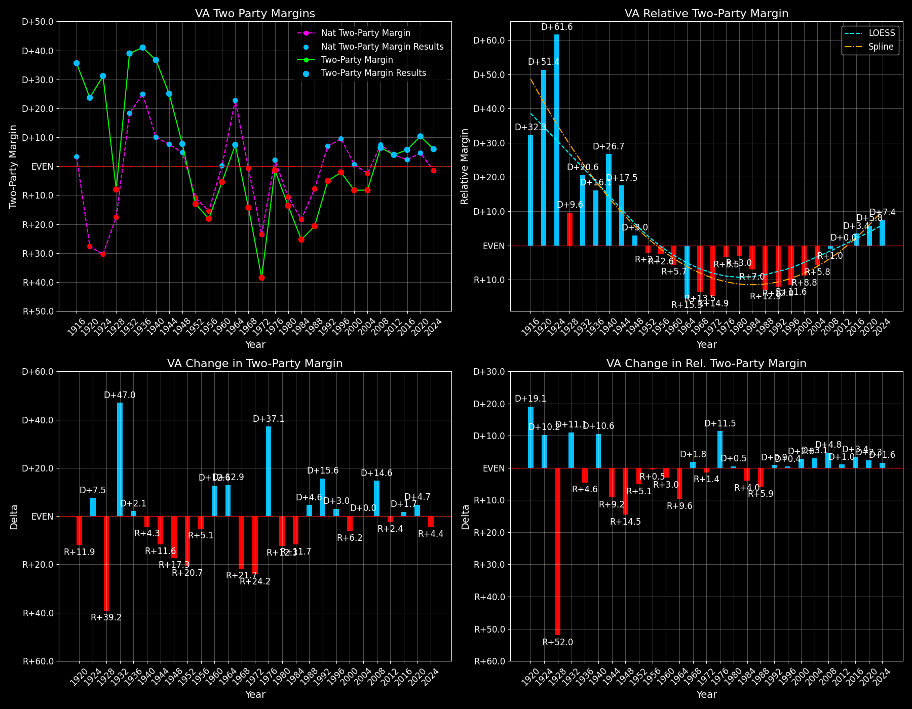

Virginia (VA) — Statewide
Virginia (VA) — Statewide

Margins · 3rd-Party share · Pres. deltas

Relative margins · Relative 3rd-Party · Rel. deltas
Virginia (VA) — Total Data
| Year | D | R | State Margin | Nat. Margin | Rel. Margin | Total votes | EVs |
|---|---|---|---|---|---|---|---|
| 1916 | 101,840(67.0%) | 48,384(31.8%) | D+35.2 | D+3.1 | D+32.0 | 152,025 | 12 |
| 1920 | 141,670(61.3%)(Δ 39,830) | 87,456(37.9%)(Δ 39,072) | D+23.5(Δ R+11.7) | R+26.2(Δ R+29.3) | D+49.6(Δ D+17.6) | 231,033(Δ 79,008) | 12 |
| 1924 | 139,716(62.5%)(Δ -1,954) | 73,312(32.8%)(Δ -14,144) | D+29.7(Δ D+6.2) | R+25.2(Δ D+1.0) | D+54.9(Δ D+5.3) | 223,602(Δ -7,431) | 12 |
| 1928 | 140,146(45.9%)(Δ 430) | 164,609(53.9%)(Δ 91,297) | R+8.0(Δ R+37.7) | R+17.4(Δ D+7.8) | D+9.4(Δ R+45.5) | 305,358(Δ 81,756) | 12 |
| 1932 | 203,979(68.5%)(Δ 63,833) | 89,637(30.1%)(Δ -74,972) | D+38.4(Δ D+46.4) | D+17.8(Δ D+35.2) | D+20.6(Δ D+11.2) | 297,942(Δ -7,416) | 11 |
| 1936 | 234,980(70.2%)(Δ 31,001) | 98,336(29.4%)(Δ 8,699) | D+40.8(Δ D+2.5) | D+24.3(Δ D+6.5) | D+16.6(Δ R+4.0) | 334,590(Δ 36,648) | 11 |
| 1940 | 235,961(68.1%)(Δ 981) | 109,363(31.6%)(Δ 11,027) | D+36.5(Δ R+4.3) | D+10.0(Δ R+14.3) | D+26.6(Δ D+10.0) | 346,607(Δ 12,017) | 11 |
| 1944 | 242,276(62.4%)(Δ 6,315) | 145,243(37.4%)(Δ 35,880) | D+25.0(Δ R+11.5) | D+7.5(Δ R+2.5) | D+17.5(Δ R+9.1) | 388,485(Δ 41,878) | 11 |
| 1948 | 200,786(47.9%)(Δ -41,490) | 172,070(41.0%)(Δ 26,827) | D+6.8(Δ R+18.1) | D+4.5(Δ R+3.0) | D+2.4(Δ R+15.1) | 419,256(Δ 30,771) | 11 |
| 1952 | 268,677(43.4%)(Δ 67,891) | 349,037(56.3%)(Δ 176,967) | R+13.0(Δ R+19.8) | R+10.9(Δ R+15.3) | R+2.1(Δ R+4.5) | 619,689(Δ 200,433) | 12 |
| 1956 | 267,760(38.4%)(Δ -917) | 386,459(55.4%)(Δ 37,422) | R+17.0(Δ R+4.0) | R+15.4(Δ R+4.5) | R+1.6(Δ D+0.5) | 697,978(Δ 78,289) | 12 |
| 1960 | 362,327(47.0%)(Δ 94,567) | 404,521(52.4%)(Δ 18,062) | R+5.5(Δ D+11.5) | D+0.2(Δ D+15.6) | R+5.6(Δ R+4.0) | 771,449(Δ 73,471) | 12 |
| 1964 | 558,038(53.5%)(Δ 195,711) | 481,334(46.2%)(Δ 76,813) | D+7.4(Δ D+12.8) | D+22.6(Δ D+22.4) | R+15.2(Δ R+9.6) | 1,042,267(Δ 270,818) | 12 |
| 1968 | 442,387(32.5%)(Δ -115,651) | 590,319(43.4%)(Δ 108,985) | R+10.9(Δ R+18.2) | R+0.7(Δ R+23.3) | R+10.2(Δ D+5.1) | 1,361,491(Δ 319,224) | 12 |
| 1972 | 438,887(30.1%)(Δ -3,500) | 988,493(67.8%)(Δ 398,174) | R+37.7(Δ R+26.9) | R+23.1(Δ R+22.4) | R+14.6(Δ R+4.4) | 1,457,019(Δ 95,528) | 12 |
| 1976 | 813,896(48.0%)(Δ 375,009) | 836,554(49.3%)(Δ -151,939) | R+1.3(Δ D+36.4) | D+2.1(Δ D+25.2) | R+3.4(Δ D+11.2) | 1,697,094(Δ 240,075) | 12 |
| 1980 | 752,174(40.3%)(Δ -61,722) | 989,609(53.0%)(Δ 153,055) | R+12.7(Δ R+11.4) | R+9.7(Δ R+11.8) | R+3.0(Δ D+0.4) | 1,866,032(Δ 168,938) | 12 |
| 1984 | 796,250(37.1%)(Δ 44,076) | 1,337,078(62.3%)(Δ 347,469) | R+25.2(Δ R+12.5) | R+18.2(Δ R+8.5) | R+7.0(Δ R+4.0) | 2,146,635(Δ 280,603) | 12 |
| 1988 | 859,799(39.2%)(Δ 63,549) | 1,309,162(59.7%)(Δ -27,916) | R+20.5(Δ D+4.7) | R+7.7(Δ D+10.5) | R+12.8(Δ R+5.8) | 2,191,609(Δ 44,974) | 12 |
| 1992 | 1,038,650(40.6%)(Δ 178,851) | 1,150,517(45.0%)(Δ -158,645) | R+4.4(Δ D+16.1) | D+5.6(Δ D+13.3) | R+9.9(Δ D+2.8) | 2,558,665(Δ 367,056) | 13 |
| 1996 | 1,091,060(45.1%)(Δ 52,410) | 1,138,350(47.1%)(Δ -12,167) | R+2.0(Δ D+2.4) | D+8.5(Δ D+3.0) | R+10.5(Δ R+0.5) | 2,416,642(Δ -142,023) | 13 |
| 2000 | 1,217,290(44.4%)(Δ 126,230) | 1,437,490(52.5%)(Δ 299,140) | R+8.0(Δ R+6.1) | D+0.5(Δ R+8.0) | R+8.6(Δ D+1.9) | 2,739,447(Δ 322,805) | 13 |
| 2004 | 1,454,742(45.5%)(Δ 237,452) | 1,716,959(53.7%)(Δ 279,469) | R+8.2(Δ R+0.2) | R+2.5(Δ R+3.0) | R+5.7(Δ D+2.8) | 3,198,367(Δ 458,920) | 13 |
| 2008 | 1,959,532(52.6%)(Δ 504,790) | 1,725,005(46.3%)(Δ 8,046) | D+6.3(Δ D+14.5) | D+7.3(Δ D+9.7) | R+1.0(Δ D+4.8) | 3,723,260(Δ 524,893) | 13 |
| 2012 | 1,971,820(51.2%)(Δ 12,288) | 1,822,522(47.3%)(Δ 97,517) | D+3.9(Δ R+2.4) | D+3.9(Δ R+3.4) | D+0.0(Δ D+1.0) | 3,854,489(Δ 131,229) | 13 |
| 2016 | 1,981,473(49.7%)(Δ 9,653) | 1,769,443(44.4%)(Δ -53,079) | D+5.3(Δ D+1.4) | D+2.1(Δ R+1.8) | D+3.2(Δ D+3.2) | 3,984,631(Δ 130,142) | 13 |
| 2020 | 2,413,568(54.1%)(Δ 432,095) | 1,962,430(44.0%)(Δ 192,987) | D+10.1(Δ D+4.8) | D+4.5(Δ D+2.4) | D+5.7(Δ D+2.4) | 4,460,524(Δ 475,893) | 13 |
| 2024 | 2,335,395(51.8%)(Δ -78,173) | 2,075,085(46.1%)(Δ 112,655) | D+5.8(Δ R+4.3) | R+1.5(Δ R+5.9) | D+7.2(Δ D+1.6) | 4,505,941(Δ 45,417) | 13 |
Virginia (VA) — Third-Party Data
| Year | D | R | Other votes | State 3rd-Party Share | 3rd-Party Nat. Share | 3rd-Party Rel. Share |
|---|---|---|---|---|---|---|
| 1916 | 101,840(67.0%) | 48,384(31.8%) | 1,801(1.2%) | 1.18% | 4.64% | -3.46% |
| 1920 | 141,670(61.3%)(Δ 39,830) | 87,456(37.9%)(Δ 39,072) | 1,907(0.8%) | 0.83% | 5.53% | -4.71% |
| 1924 | 139,716(62.5%)(Δ -1,954) | 73,312(32.8%)(Δ -14,144) | 10,574(4.7%) | 4.73% | 17.14% | -12.41% |
| 1928 | 140,146(45.9%)(Δ 430) | 164,609(53.9%)(Δ 91,297) | 603(0.2%) | 0.20% | 0.99% | -0.79% |
| 1932 | 203,979(68.5%)(Δ 63,833) | 89,637(30.1%)(Δ -74,972) | 4,326(1.5%) | 1.45% | 2.94% | -1.49% |
| 1936 | 234,980(70.2%)(Δ 31,001) | 98,336(29.4%)(Δ 8,699) | 1,274(0.4%) | 0.38% | 2.66% | -2.28% |
| 1940 | 235,961(68.1%)(Δ 981) | 109,363(31.6%)(Δ 11,027) | 1,283(0.4%) | 0.37% | 0.48% | -0.11% |
| 1944 | 242,276(62.4%)(Δ 6,315) | 145,243(37.4%)(Δ 35,880) | 966(0.2%) | 0.25% | 0.72% | -0.47% |
| 1948 | 200,786(47.9%)(Δ -41,490) | 172,070(41.0%)(Δ 26,827) | 46,400(11.1%) | 11.07% | 5.38% | 5.69% |
| 1952 | 268,677(43.4%)(Δ 67,891) | 349,037(56.3%)(Δ 176,967) | 1,975(0.3%) | 0.32% | 0.49% | -0.17% |
| 1956 | 267,760(38.4%)(Δ -917) | 386,459(55.4%)(Δ 37,422) | 43,759(6.3%) | 6.27% | 0.67% | 5.60% |
| 1960 | 362,327(47.0%)(Δ 94,567) | 404,521(52.4%)(Δ 18,062) | 4,601(0.6%) | 0.60% | 0.73% | -0.13% |
| 1964 | 558,038(53.5%)(Δ 195,711) | 481,334(46.2%)(Δ 76,813) | 2,895(0.3%) | 0.28% | 0.48% | -0.20% |
| 1968 | 442,387(32.5%)(Δ -115,651) | 590,319(43.4%)(Δ 108,985) | 328,785(24.1%) | 24.15% | 13.86% | 10.29% |
| 1972 | 438,887(30.1%)(Δ -3,500) | 988,493(67.8%)(Δ 398,174) | 29,639(2.0%) | 2.03% | 1.80% | 0.23% |
| 1976 | 813,896(48.0%)(Δ 375,009) | 836,554(49.3%)(Δ -151,939) | 46,644(2.7%) | 2.75% | 1.90% | 0.85% |
| 1980 | 752,174(40.3%)(Δ -61,722) | 989,609(53.0%)(Δ 153,055) | 124,249(6.7%) | 6.66% | 8.24% | -1.58% |
| 1984 | 796,250(37.1%)(Δ 44,076) | 1,337,078(62.3%)(Δ 347,469) | 13,307(0.6%) | 0.62% | 0.67% | -0.05% |
| 1988 | 859,799(39.2%)(Δ 63,549) | 1,309,162(59.7%)(Δ -27,916) | 22,648(1.0%) | 1.03% | 0.98% | 0.05% |
| 1992 | 1,038,650(40.6%)(Δ 178,851) | 1,150,517(45.0%)(Δ -158,645) | 369,498(14.4%) | 14.44% | 19.55% | -5.11% |
| 1996 | 1,091,060(45.1%)(Δ 52,410) | 1,138,350(47.1%)(Δ -12,167) | 187,232(7.7%) | 7.75% | 10.05% | -2.30% |
| 2000 | 1,217,290(44.4%)(Δ 126,230) | 1,437,490(52.5%)(Δ 299,140) | 84,667(3.1%) | 3.09% | 3.75% | -0.66% |
| 2004 | 1,454,742(45.5%)(Δ 237,452) | 1,716,959(53.7%)(Δ 279,469) | 26,666(0.8%) | 0.83% | 1.00% | -0.17% |
| 2008 | 1,959,532(52.6%)(Δ 504,790) | 1,725,005(46.3%)(Δ 8,046) | 38,723(1.0%) | 1.04% | 1.42% | -0.38% |
| 2012 | 1,971,820(51.2%)(Δ 12,288) | 1,822,522(47.3%)(Δ 97,517) | 60,147(1.6%) | 1.56% | 1.73% | -0.17% |
| 2016 | 1,981,473(49.7%)(Δ 9,653) | 1,769,443(44.4%)(Δ -53,079) | 233,715(5.9%) | 5.87% | 5.73% | 0.14% |
| 2020 | 2,413,568(54.1%)(Δ 432,095) | 1,962,430(44.0%)(Δ 192,987) | 84,526(1.9%) | 1.89% | 1.84% | 0.05% |
| 2024 | 2,335,395(51.8%)(Δ -78,173) | 2,075,085(46.1%)(Δ 112,655) | 95,461(2.1%) | 2.12% | 1.88% | 0.24% |

Two-party margins · relative · deltas
Virginia (VA) — Two-Party Data
| Year | D | R | 2-Party Margin | 2-Party Nat. Margin | 2-Party Rel. Margin | EVs |
|---|---|---|---|---|---|---|
| 1916 | 101,840(67.8%) | 48,384(32.2%) | D+35.6 | D+3.3 | D+32.3 | 12 |
| 1920 | 141,670(61.8%)(Δ 39,830) | 87,456(38.2%)(Δ 39,072) | D+23.7(Δ R+11.9) | R+27.7(Δ R+31.0) | D+51.4(Δ D+19.1) | 12 |
| 1924 | 139,716(65.6%)(Δ -1,954) | 73,312(34.4%)(Δ -14,144) | D+31.2(Δ D+7.5) | R+30.4(Δ R+2.7) | D+61.6(Δ D+10.2) | 12 |
| 1928 | 140,146(46.0%)(Δ 430) | 164,609(54.0%)(Δ 91,297) | R+8.0(Δ R+39.2) | R+17.6(Δ D+12.8) | D+9.6(Δ R+52.0) | 12 |
| 1932 | 203,979(69.5%)(Δ 63,833) | 89,637(30.5%)(Δ -74,972) | D+38.9(Δ D+47.0) | D+18.3(Δ D+35.9) | D+20.6(Δ D+11.1) | 11 |
| 1936 | 234,980(70.5%)(Δ 31,001) | 98,336(29.5%)(Δ 8,699) | D+41.0(Δ D+2.1) | D+24.9(Δ D+6.6) | D+16.1(Δ R+4.6) | 11 |
| 1940 | 235,961(68.3%)(Δ 981) | 109,363(31.7%)(Δ 11,027) | D+36.7(Δ R+4.3) | D+10.0(Δ R+14.9) | D+26.7(Δ D+10.6) | 11 |
| 1944 | 242,276(62.5%)(Δ 6,315) | 145,243(37.5%)(Δ 35,880) | D+25.0(Δ R+11.6) | D+7.5(Δ R+2.5) | D+17.5(Δ R+9.2) | 11 |
| 1948 | 200,786(53.9%)(Δ -41,490) | 172,070(46.1%)(Δ 26,827) | D+7.7(Δ R+17.3) | D+4.7(Δ R+2.8) | D+3.0(Δ R+14.5) | 11 |
| 1952 | 268,677(43.5%)(Δ 67,891) | 349,037(56.5%)(Δ 176,967) | R+13.0(Δ R+20.7) | R+10.9(Δ R+15.6) | R+2.1(Δ R+5.1) | 12 |
| 1956 | 267,760(40.9%)(Δ -917) | 386,459(59.1%)(Δ 37,422) | R+18.1(Δ R+5.1) | R+15.5(Δ R+4.6) | R+2.6(Δ R+0.5) | 12 |
| 1960 | 362,327(47.2%)(Δ 94,567) | 404,521(52.8%)(Δ 18,062) | R+5.5(Δ D+12.6) | D+0.2(Δ D+15.7) | R+5.7(Δ R+3.0) | 12 |
| 1964 | 558,038(53.7%)(Δ 195,711) | 481,334(46.3%)(Δ 76,813) | D+7.4(Δ D+12.9) | D+22.7(Δ D+22.5) | R+15.3(Δ R+9.6) | 12 |
| 1968 | 442,387(42.8%)(Δ -115,651) | 590,319(57.2%)(Δ 108,985) | R+14.3(Δ R+21.7) | R+0.8(Δ R+23.5) | R+13.5(Δ D+1.8) | 12 |
| 1972 | 438,887(30.7%)(Δ -3,500) | 988,493(69.3%)(Δ 398,174) | R+38.5(Δ R+24.2) | R+23.6(Δ R+22.8) | R+14.9(Δ R+1.4) | 12 |
| 1976 | 813,896(49.3%)(Δ 375,009) | 836,554(50.7%)(Δ -151,939) | R+1.4(Δ D+37.1) | D+2.1(Δ D+25.7) | R+3.5(Δ D+11.5) | 12 |
| 1980 | 752,174(43.2%)(Δ -61,722) | 989,609(56.8%)(Δ 153,055) | R+13.6(Δ R+12.3) | R+10.6(Δ R+12.7) | R+3.0(Δ D+0.5) | 12 |
| 1984 | 796,250(37.3%)(Δ 44,076) | 1,337,078(62.7%)(Δ 347,469) | R+25.4(Δ R+11.7) | R+18.3(Δ R+7.7) | R+7.0(Δ R+4.0) | 12 |
| 1988 | 859,799(39.6%)(Δ 63,549) | 1,309,162(60.4%)(Δ -27,916) | R+20.7(Δ D+4.6) | R+7.8(Δ D+10.5) | R+12.9(Δ R+5.9) | 12 |
| 1992 | 1,038,650(47.4%)(Δ 178,851) | 1,150,517(52.6%)(Δ -158,645) | R+5.1(Δ D+15.6) | D+6.9(Δ D+14.7) | R+12.0(Δ D+0.9) | 13 |
| 1996 | 1,091,060(48.9%)(Δ 52,410) | 1,138,350(51.1%)(Δ -12,167) | R+2.1(Δ D+3.0) | D+9.5(Δ D+2.6) | R+11.6(Δ D+0.4) | 13 |
| 2000 | 1,217,290(45.9%)(Δ 126,230) | 1,437,490(54.1%)(Δ 299,140) | R+8.3(Δ R+6.2) | D+0.5(Δ R+8.9) | R+8.8(Δ D+2.8) | 13 |
| 2004 | 1,454,742(45.9%)(Δ 237,452) | 1,716,959(54.1%)(Δ 279,469) | R+8.3(Δ D+0.0) | R+2.5(Δ R+3.0) | R+5.8(Δ D+3.1) | 13 |
| 2008 | 1,959,532(53.2%)(Δ 504,790) | 1,725,005(46.8%)(Δ 8,046) | D+6.4(Δ D+14.6) | D+7.4(Δ D+9.9) | R+1.0(Δ D+4.8) | 13 |
| 2012 | 1,971,820(52.0%)(Δ 12,288) | 1,822,522(48.0%)(Δ 97,517) | D+3.9(Δ R+2.4) | D+3.9(Δ R+3.4) | D+0.0(Δ D+1.0) | 13 |
| 2016 | 1,981,473(52.8%)(Δ 9,653) | 1,769,443(47.2%)(Δ -53,079) | D+5.7(Δ D+1.7) | D+2.2(Δ R+1.7) | D+3.4(Δ D+3.4) | 13 |
| 2020 | 2,413,568(55.2%)(Δ 432,095) | 1,962,430(44.8%)(Δ 192,987) | D+10.3(Δ D+4.7) | D+4.5(Δ D+2.3) | D+5.8(Δ D+2.3) | 13 |
| 2024 | 2,335,395(53.0%)(Δ -78,173) | 2,075,085(47.0%)(Δ 112,655) | D+5.9(Δ R+4.4) | R+1.5(Δ R+6.0) | D+7.4(Δ D+1.6) | 13 |